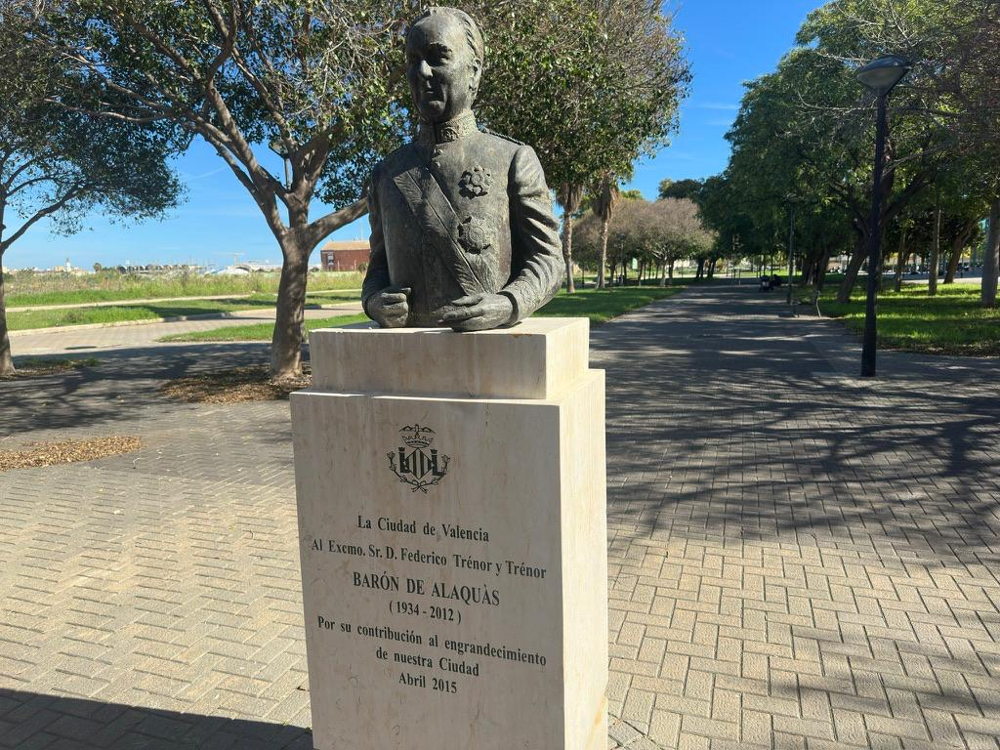

El alma del barrio
Después de la riada del 57, el Turia se quedó sin río: una herida larga en medio de Valencia. Y la idea oficial en los años sesenta y setenta era clara: hacer una autovía dentro de la ciudad, una "aorta viaria". Coches pasando justo por donde hoy juegan los niños, pasean los mayores y las Falleras Mayores se hacen la foto. La ciudad dijo basta. Nació una respuesta que aún resuena: "El lecho del Turia es nuestro y lo queremos verde". No era solo ecología. Era una forma de vivir: calle, sombra, banco, conversación. El lecho del río no tenía que separar barrios, sino unirlos.
Aquí entra Federico Trénor i Trénor, Barón de Alaquàs. Desde los cargos que ocupaba en el Estado, movió lo necesario para que el lecho del río no acabara asfaltado y se cediera a Valencia. Público, verde, vivo. Esto tiene fecha: 1 de diciembre de 1976. No es un cuento. De ahí nace el Jardín del Turia. Que no es solo "un parque largo". Es una victoria vecinal. Hoy es carril bici, pista para correr, banco para desahogarse, lugar donde quedar antes de la Ofrenda. Es donde bajas a coger aire.

En Les Moreres, justo al lado del lecho, está el Paseo de Federico Trénor, con el busto del Barón. No es decoración, es recordatorio: esto se luchó. Y en el mismo barrio está pasando otra cosa. Ya hay comisión fallera propia, la Alquería del Favero. No viene de una tradición antigua: se ha hecho entre vecinos y todavía sin un casal fijo. Se mueven de un sitio a otro, montan mesas donde pueden, pero tiran adelante igual. No es solo fiesta de marzo, es "aquí también somos". Las dos cosas juntas cuentan el mismo mensaje. El Jardín del Turia dice: este espacio es de todos. La Falla del barrio dice: esta gente quiere ser barrio y ya lo está siendo. Una cosa cuida el lugar. La otra hace comunidad. Y eso es lo que hace real a Les Moreres: no que alguien de fuera le ponga un nombre, sino que la gente diga "esto es nuestro" y se quede a defenderlo. Aunque sin casal propio.